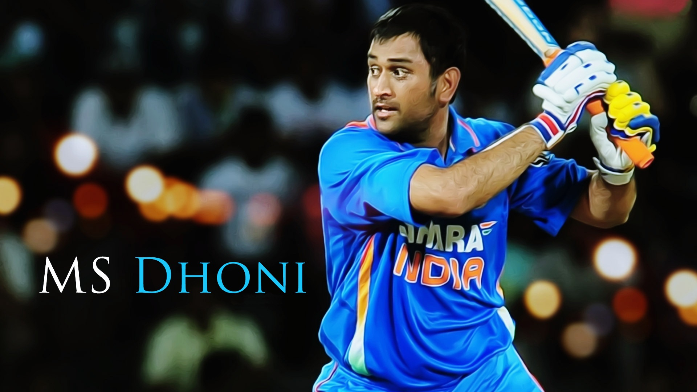

M. S. Dhoni is an Indian cricketer best remembered for leading the Indian ODI team to its second World Cup win in 2011. Check out this biography to know about his childhood, family life, achievements and fun facts about his life.
Nick Name: Mahi, MS, MSD, Captain Cool, Mahendra Dhoni
Birthday: July 7, 1981
Nationality: Indian
Famous: Cricketers Indian Men
Also Known As: Mahendra Singh Dhoni
Sun Sign: Cancer
Age: 37 Years
Born In: Ranchi
Famous As: Cricketer
Spouse/Ex-: Sakshi Dhoni (M. 2010)
Father: Pan Singh
Mother: Devaki Devi
Siblings: Jayanti Gupta, Narendra Singh Dhoni
Children: Ziva
Awards: Padma Shri 2009
Padma Bhushan 2018
Rajiv Gandhi Khel Ratna 2007
ICC ODI Team Of The Year 2013 - 2012 - 2011
ICC ODI Player Of The Year Award 2009 - 2008
CNN-IBN Indian Of The Year In Sports 2011
M. S. Dhoni is an Indian cricketer best remembered for leading the Indian ODI team to its second World Cup win in 2011. He made his ODI debut for the national team on December 23, 2004, against Bangladesh and went on to serve as the captain of the Indian ODI team from 2007 to 2016. He debuted as a Test player against Sri Lanka on 2nd December 2005, and led the team in Test cricket from 2008 to 2014. Known for his aggressive playing style, he is revered as one of the best "finishers" in the limited over format of the game. He is also one of the most successful Indian captains and holds a number of records for his captaincy. Notably, the Indian team became the No.1 Test team in 2009 under his captaincy. He also led the Indian team to win the 2007 ICC World Twenty20 and the 2013 ICC Champions Trophy. While his achievements in the IPL format often get overshadowed by his international records, he also helped his team, Chennai Super Kings, win IPL twice in 2010 and 2011.
Mahendra Singh Dhoni was born on July 7, 1981, in Ranchi, Bihar (now in Jharkhand), into a Rajput family originally from Uttarakhand. His father, Pan Singh, is retired employee of MECON (a Public Sector Undertaking under the Ministry of Steel), where he worked in junior management positions. His mother Devaki Devi is a housewife.
Mahendra Singh Dhoni has one elder brother, Narendra Singh Dhoni, and one elder sister, Jayanti Gupta. His brother is a politician, while his sister is an English teacher.
He attended DAV Jawahar Vidya Mandir located at Shyamali in Ranchi, Jharkhand. He was an athletic student, but was more interested in badminton and football initially. He was the goalkeeper of his school football team.
It was by sheer chance that his football coach once sent him to fill in as the wicketkeeper of the cricket team of a local club. He charmed everyone with his performance and secured a permanent spot as the regular wicketkeeper in the Commando cricket club team for three years during 1995-98.
He continued to perform well and was selected for Vinoo Mankad Trophy Under-16 Championship team during the 1997-98 season. He started to take cricket seriously only after completing 10th standard.
In 1998, M. S. Dhoni, who had been playing only in school and club level cricket till then, was selected to play for the Central Coal Fields Limited (CCL) team. He impressed Deval Sahay, an ex Bihar Cricket Association Vice-President, with his determination and hard-hitting skills, which opened up opportunities for him to play in First Class cricket.
During the 1998-99 season, he failed to make it to the East Zone U-19 squad or Rest of India squad, but he was selected for the East Zone U-19 squad for the CK Nayudu trophy in the next season. Unfortunately, he could not perform well and his team finished last in the tournament.
He made his Ranji Trophy debut for Bihar cricket team during the 1999-2000 season with a score of 68 not out in the second innings. He scored his maiden first-class century during a game against Bengal in the following season, but his team lost the game.
Coming from a middles class Indian family, money was not a luxury for him. In fact, at the age of 20, he moved to Midnapore, West Bengal, after securing a Travelling Ticket Examiner (TTE) job at Kharagpur railway station via sports quota. He served as a railway employee from 2001 to 2003.
In 2001, he was selected to play the Duleep Trophy for the East Zone; however, Bihar Cricket Association could not communicate this information to Dhoni in time, as he was located in Midnapore. He learnt this at a time when his team had already reached Agartala, the venue for the match. While one of his friends managed to hire a car for him to reach Kolkata Airport for a flight, the car broke down halfway, resulting in Deep Dasgupta serving as the wicketkeeper.
During the 2002-03 season, he continued to perform well in the Ranji Trophy and the Deodhar Trophy, which helped him get recognition. As part of the East Zone team, he won the Deodhar Trophy in 2003-2004 season, in which he scored another century.
He was eventually picked for the India A squad for a tour of Zimbabwe and Kenya during 2003-04. He took 7 catches and had stumpings during a match against Zimbabwe XI. He also helped his team defeat Pakistan A in back-to-back matches, scoring a half century in the first, followed by two centuries. With such performance, he got noticed by the then Indian National Team captain Sourav Ganguly.
Following his superb performance in first-class cricket, M. S. Dhoni was selected to play in the national ODI team for India's tour of Bangladesh in 2004-05. Unfortunately, he got run out for a duck in his debut match and could not perform very well during the rest of the series.
Despite poor performance in his debut series, the selectors showed faith in him by selecting him for the Pakistan ODI series that followed. Dhoni didn't disappoint them as he scored a record breaking 148, most by an Indian wicketkeeper-batsman, in his fifth ODI match.
Dhoni, who did not get enough opportunities to bat in the first two matches of the India-Sri Lanka bilateral series, was promoted in the batting order for the third match of the series. He utilized the opportunity fully by scoring a speedy 183 not out off 145 balls while chasing a target of 299. He broke a number of records during the series and was named Man of the Series for his performance.
During the India-Pakistan ODI series of 2005-06, he contributed 68, 72 not out, 2 not out and 77 not out in four of the five matches to help his team win the series 4-1. With his consistent performance, he dethroned Ricky Ponting to reach the top of the ICC ODI Rankings for batsmen on 20 April 2006, even though just for a week.
In the two series against West Indies and Sri Lanka before the 2007 Cricket World Cup Tournament, Dhoni showed terrific performance with an average of over 100. However, he failed to perform during the World Cup and the Indian team could not go beyond the group stage in the tournament.
He was named the vice-captain of the ODI team for two series against South Africa and England in 2007. He also led the Indian team to the ICC World Twenty20 trophy in South Africa and won the trophy, defeating the Pakistani team.
Following his successful captaincy in Twenty20, he was given the responsibility to lead the Indian ODI team for the series against Australia in September 2007. He would later go on to lead India to World Cup win in 2011, for which he received enormous praise from cricket legend and his then teammate Sachin Tendulkar.
During 2009, he scored 1198 runs in just 24 innings to equal Ricky Ponting's score in 30 innings in that calendar year. He also stayed at the top of the ICC ODI Batsman rankings for several months in 2009.
He led India to victory in the 2011 World Cup. In the final match against Sri Lanka, he promoted himself up the batting order and played a match winning knock of 91 not out.
In 2013, he captained India to victory in the ICC Champions Trophy and became the only captain to have won all the ICC trophies, i.e Test Mace, ODI World Cup and Champions Trophy.
M. S. Dhoni was selected into the Indian Test Team as a wicketkeeper during the series against Sri Lanka in 2005. He scored 30 runs in his debut match, which was interrupted by rain. He scored his first half-century in the following match, helping India win with a big margin.
During India's tour of Pakistan in early 2006, he scored his maiden test century in an aggressive innings that helped India avoid follow-on. He continued to perform well in the next three matches, one against Pakistan and two against England
Dhoni, who served as the vice-captain during the series against Australia in 2008, was promoted to fulltime test captaincy in the fourth match after the then captain Anil Kumble got injured in the previous match and announced his retirement.
He went on to score two centuries in 2009 during the series against Sri Lanka to lead his team to victory. Under his captaincy India, went on to become the No. 1 Team in the ICC Test Rankings in December 2009.
He retired from Test cricket after the third match during India's tour of Australia in the 2014-15 season. He continued to play ODIs in the following years, but retired from ODI captaincy in January 2017. However, he is still available to play limited over cricket.
Test Record: Matches Played - 90, Innings - 144, Runs - 4876, Highest Score - 224, Average - 38.09, Centuries - 6, Half Centuries - 33, Catches - 256, Stumpings – 38
ODI Record: Matches Played - 286, Innings - 249, Runs - 9275, Highest Score - 183*, , Average - 50.96, Centuries - 10, Half Centuries - 61, Catches - 269, Stumpings – 94
T20 Record: Matches Played - 76, Innings - 66, Runs - 1209, Highest Score - 56, Average - 36.63, Centuries - 0, Half Centuries - 1, Catches - 42, Stumpings - 23
M. S. Dhoni has received 6 Man of the Series awards and 20 Man of the Match awards for his performance in ODIs. He has also received 2 Man of the Match awards in Tests throughout his career.
He has been named the ICC ODI Player of the Year in 2008 and 2009. He also made it to the ICC World ODI XI team for 7 consecutive years from 2008 to 2014. He was included in the ICC World Test XI team in 2009, 2010 and 2013
.
In 2007, he received the Rajiv Gandhi Khel Ratna award, the highest honor given in India for achievement in sports.
He also won the Padma Shri, India's fourth highest civilian honor, in 2009.
MS Dhoni was conferred with country's third-highest civilian award, Padma Bhushan, on Aoril 2, 2018.
It was revealed in his biopic that M. S. Dhoni had been in a relationship with a girl named Priyanka Jha during 2002. It was an intense, but short lived affair as she succumbed to injuries from a car accident the same year. Dhoni, who had been travelling with the India A team at that time, learned about the incident much later and was emotionally devastated. It took him almost a year to get back on track for his professional career.
Dhoni started dating Sakshi Singh Rawat in 2008 after they met at Taj Bengal, where she worked as an intern after completing her graduation in Hotel Management from the Institute of Hotel Management, Aurangabad. Incidentally, the two knew each other during their childhood years as their fathers were colleagues at MECON and they both attended the same school, even though she was seven years younger to him.
The two dated for two years and got married on July 4, 2010, one day after they got engaged. The couple gave birth to a baby girl named Ziva on February 6, 2015.
After he won the Cricket World Cup in 2011, film director Neeraj Pandey decided to make a biopic on his life and achievements. The film, M.S. Dhoni: The Untold Story, was released on September 30, 2016.
Dhoni, who could not reach Agartala on time to play in the first Duleep Trophy match for the East Zone in 2001, was selected as the 12th man for the second match in Pune. While he did not play in the game, he met his idol Sachin Tendulkar for the first time when the latter asked for water during the drinks break.
After India crashed out of the 2007 Cricket World Cup in the first round, his home in Ranchi was vandalized by angry fans. He had to seek police protection during this time.